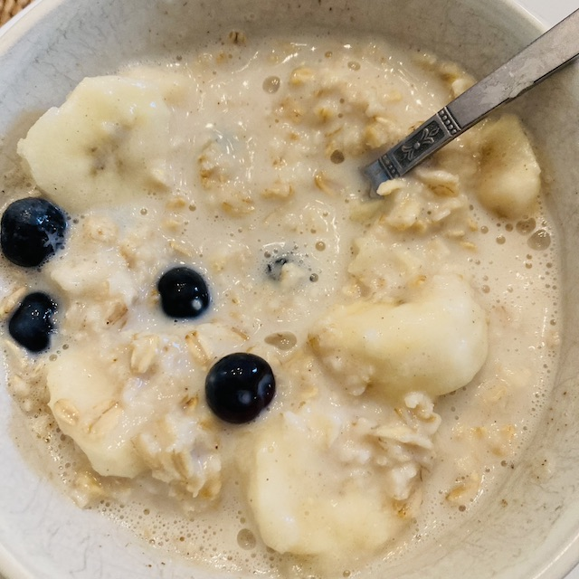

Weekend Oatmeal

Description
During the work week, I prioritize every second of sleep in the morning. For me, that means soup for breakfast - it takes almost no time to dump half a can in a bowl and microwave it, but it's not the most filling. On the weekend, I have time to make myself something more substantial. I can't really stomach oatmeal on its own, but with some doctoring it goes from lumpy and slimy to smooth, creamy, and satisfying
Ingredients
- 1/2C rolled oats
- 1/2C milk of your choice
- 1/2C water
- Smooth, natural, unsalted peanut or almond butter.
- Maple syrup
- Cinnamon
- Fruit of your choice - banana, strawberries, blueberries, and peach are my favorites, but you do you
Steps
- Combine oats, milk, and water in a bowl that can fit 3-4C of liquid
- Microwave on high for 1:30. Stop, stir, and microwave for another minute. This will keep things from boiling over.
- Immediately after removing the bowl from the microwave, grab a clean spoon and scoop up a hefty serving of your peanut or almond butter. Measure with your heart.
- Stir the peanut or almond butter into the hot oatmeal, mashing against the sides of the bowl if it's not incorporating.
- Drizzle some maple syrup on top, to your taste. Sprinkle some cinnamon.
- Add your fruit, stir, and serve.